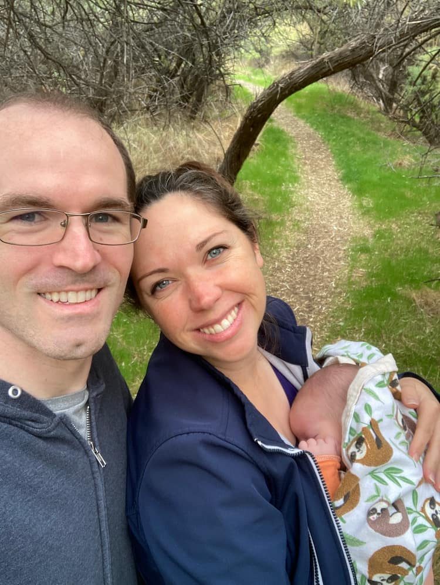

Sterling Steele
About Me
I live in Bluffdale, Utah, with my wife and child. I got married in June 2024, and our baby was born 16 months later. 😊 I'm currently studying Software Development through BYU Pathway. I’ve earned around 80 combined credits from several universities, but I’m working toward completing my Bachelor's degree before starting my career. Outside of school, I enjoy spending time with my family—hiking, reading, visiting loved ones, cooking, listening to audiobooks, and playing games.
Software Development
Software development graduates design, build, test, and maintain software such as websites, apps, desktop programs, and embedded systems. They write and debug code in languages like Python, JavaScript, Java, and C#. Developers often collaborate in teams, working alongside designers, analysts, and engineers to deliver effective solutions. Common career paths include front-end developer, back-end developer, full-stack developer, mobile app developer, DevOps engineer, QA engineer, and cybersecurity analyst.